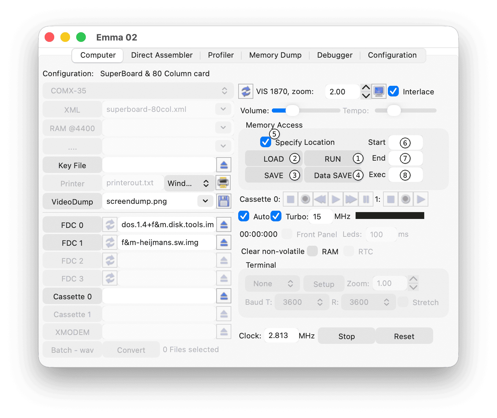
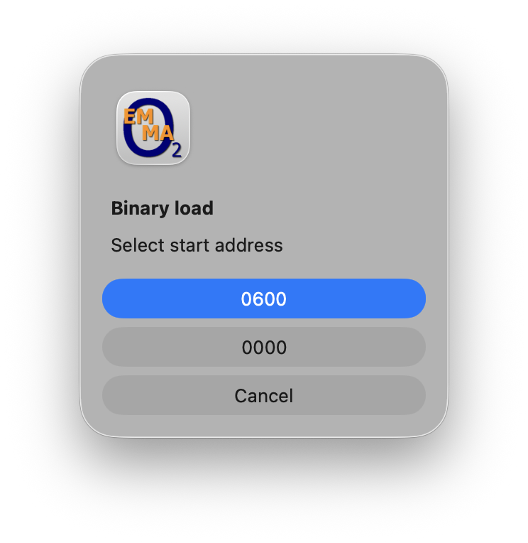
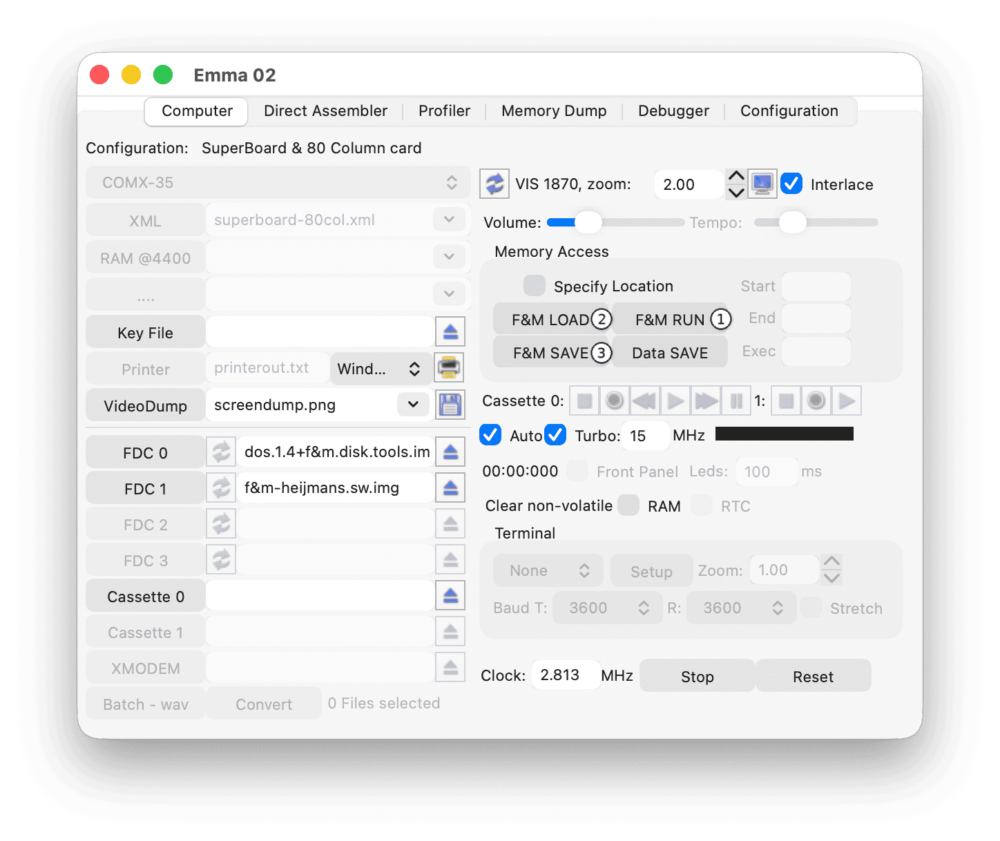

The Memory Access function allows running, loading, and saving files directly to and from the emulated computer memory.
The Memory Access controls are shown below:

Supported file formats:
During installation, software is placed in the emulator directories (located in the application data directory, see the Directory and File Structure section).
Program and data files (formats designed for this emulator, such as .comx, .pecom, .tmc600, .fpb, .rca, .super, and .tiny) can be loaded in the following emulators:
To load and run a program file:
The emulator will automatically load and run the software.
Note: This is also possible from a start-up screen. The emulator will first start BASIC and then load and run the software.
To load a program file without running (similar to PLOAD):
Note: From a start-up screen, BASIC will be started automatically before loading.
To save a BASIC or BASIC/machine code program (similar to PSAVE):
To save data (similar to DSAVE):
For loading data files (similar to DLOAD):
Data can be reloaded while a BASIC program is running. Replace the DLOAD command in the program with a message instructing the user to press the LOAD button (2).
To save a specific machine code program from RAM:
Only the specified memory range will be saved.
When loading this file:
Using RUN on a machine code file will execute it via a CALL using the execution address.
After any RUN, LOAD, or SAVE command, the software name is shown in the emulator window.
Note: On the COMX-35 emulator, this also applies to BASIC DOS commands LOAD, SAVE, RUN, and URUN.
The displayed name is reused as the default when saving via Memory Access.
When loading machine code via DOS:
To load a file:
Note: Intel Hex files load at their stored memory location.
Note: Binary files load at address 0 unless a Start address (6) is specified.
If a start address is specified, a popup allows selection between address 0 and the specified address.

To save memory to a file:
Use Intel Hex (.hex) format when not saving from address 0.
The Exec (8) (execution) address field is not used for Intel Hex and binary files.
Ensure Specify Location (5) is enabled when defining Start (6) and End (7) values.
After any LOAD or SAVE command, the software name is shown in the emulated computer window.
After loading and running F&M Basic on the COMX-35 emulator, the buttons change as shown below:

Programs written in F&M Basic can then be handled in the same way as described above.